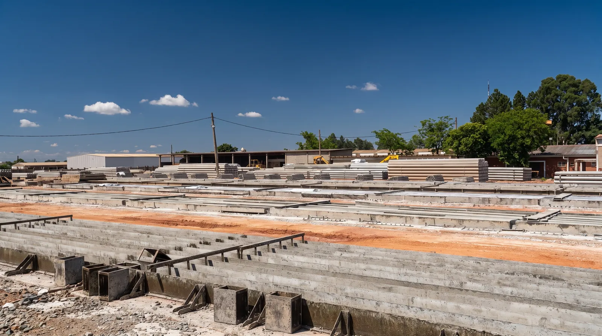

Em 24 horas,
uma estaca nasce.
Role a página e acompanhe um dia inteiro na fábrica da IPR: da pista vazia antes do sol ao ensaio que libera a peça na manhã seguinte.




Role a página e acompanhe um dia inteiro na fábrica da IPR: da pista vazia antes do sol ao ensaio que libera a peça na manhã seguinte.
06:00
Os fios de aço CP-175 são esticados de uma cabeceira à outra da pista: seis por seção, oito na quadrada. A força que vai proteger a estaca nasce antes do concreto.
07:30
Na central própria, cimento, areia e brita são pesados em balanças calibradas. Cada metro cúbico fica registrado.
08:30
O concreto C40 é lançado sobre os fios tensos e adensado na fôrma metálica. Do mesmo lote saem os corpos de prova que vão contar a história desta peça.
10:00
A peça descansa na pista. Hora a hora, o concreto ganha resistência.
17:30
No fim da tarde a superfície já mudou: o concreto úmido e escuro fica claro e fosco. É a cura acontecendo.
22:00
O pátio escurece. A resistência do concreto continua subindo.
05:30 · 24 horas
Um corpo de prova do lote vai à prensa. É o resultado dele que libera a desmoldagem e o manuseio da peça. Outros serão rompidos com 3, 7 e 28 dias.
06:00 · Dia 2
Os fios são liberados nas cabeceiras e a força passa para o concreto. A fôrma abre.
Hexagonal Ø 33 · 6 fios Ø 6 mm CP-175 RB · segmentos de 6, 8 e 10 m
Escolha a geometria e a bitola. A estaca se monta de novo, da fôrma ao concreto curado, com os fios exatamente onde estão nos ábacos da IPR.
Arraste para girar · toque duplo volta
Depois das 24 horas
O bate-estacas é posicionado sobre o ponto locado em projeto. A estaca é içada e aprumada na torre-guia antes do primeiro golpe.
O martelo aplica golpes sucessivos e a estaca avança pelas camadas do solo. Sem retirada de terra, sem lama bentonítica e sem sobra de concreto no canteiro.
Para profundidades maiores que 10 m, um novo segmento é posicionado e unido por solda nos anéis de emenda.
A penetração final para um número determinado de golpes, a nega, e o repique elástico são medidos na hora e confrontados com o projeto.
Indústria, varejo, energia e bens de consumo. Ver todos os clientes